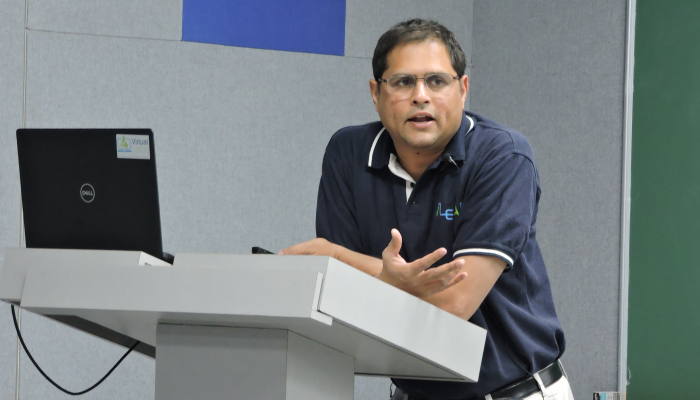

Venkatesh Choppella
Main

- Associate Professor at IIIT Hyderabad.
- Associate Dean, Division of Flexible Learning, IIIT Hyderabad.
Administrative Assistant: Sahiti Potnuru
sahiti.potnuru@research.iiit.ac.in
Announcements
Spring and Summer 2024: BTech and MTech Student projects internships in Virtual Labs for Operating
- Please contact me if for projects in Virtual Labs
- For projects in S/W Engg., Programming Languages, and Virtual Labs, please visit this link.
Research Interests
My current interests are in software architecture, computer science education and educational technology.
- Software Architecture
- In software architecture, I am exploring the role of system dynamics in specifying architectures, for large SaaS systems (with my PhD student Mrityunjay Kumar, \cite{...}) and large scale control systems (with my PhD student Amar Banerjee \cite{...}). I am also working on specifications of concurrent systems (\cite{...}) and shared data structures with my student Arjun Sanjeev (currently at Google).
- Computing Education
- My work is driven by the need to develop a pedagogy of computing rooted in formal methods and modelling. Towards this goal, I am applying the Mapcode formalism developed by my colleague K Viswanath (\cite{...}) to undergraduate computing education. Our goal is to extend the mapcode approach to interactive systems and applying engineering principles like feedback control, leading to Algodynamics, a systems view of computing \cite{...}. I am currently working with students to develop various interactive simulations to demonstrate the design principles around algodynamics. You can find some of these simulations at https://algodynamics.io.
- Educational Technology
I am the institute PI of Virtual Labs, a large inter-institute project of the Ministry of Education, India.
- Systems Development
- IIIT's Virtual Labs
Engineering Architecture and Design group VLEAD currently hosts the entire vlabs architecture and systems for the entire country. I am looking for students interested in systems development to contribute.
- Experiment development
- My students and I have
developed several virtual lab experiments in Data Structures (I and II: TODO: links) and are developing experiments in Operating Systems.
- Programming Languages and Formal Methods for Systems
- I have research interests in Programming Languages, Type systems, Compilers and Concurrency and Verification tools like model checkers and theorem provers. I am looking for students interested in working in these areas. The kind of problems I plan to look at are at the intersection of programming languages, formal methods, verification and systems. If you're interested in Functional programming, you may want to read Functional Programming for no Rhyme or Reason. (This is NOT generated by ChatGPT!)